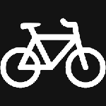
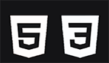

Хоби

Велосипедизам
Планинарење
Здраво, јас сум Бојан Трпески од Скопје. Имам 19 години и студент сум на Факултетот за информатички науки и компјутерско инженерство во Скопје,
насока софтверско инженерство и информациски системи. Завршив средно гимназиско училиште во Скопје. Во средно активно земав учество во ИТ секцијата
на училиштето. Имам познавања во програмските јазици C и C++, како и јазиците за изработување на сајтови HTML и CSS. Исто така, имам 2 дипломи за Microsoft Office
Specialist (Word и PowerPoint). Во слободно време уживам да возам велосипед или да планинарам. Рекреативно играм фудбал и кошарка. Навивам за фубалскиот клуб Ливерпул
и постојано ги гледам нивните натпревари. Покрај фудбалот, обожавател сум на брзинските трки и речиси не пропуштам трка во Формула 1 и MotoGP. Покрај физичките спортови
, како релаксација сака да играм шах. Најчесто играм online, а поретко со другари. Во слободно време сакам да работам на "Photoshop". Иако сум аматер, се обидувам да
креирам некои интересни слики. За мене, веб дизајнот и работата во "Photoshop" се доста слични бидејќи и во двете области треба да се реши некој визуелен проблем.
Вештини
C/C++

HTML/CSS
Интереси
Фудбал Формула 1 Фотошоп
Фудбал Формула 1 Фотошоп